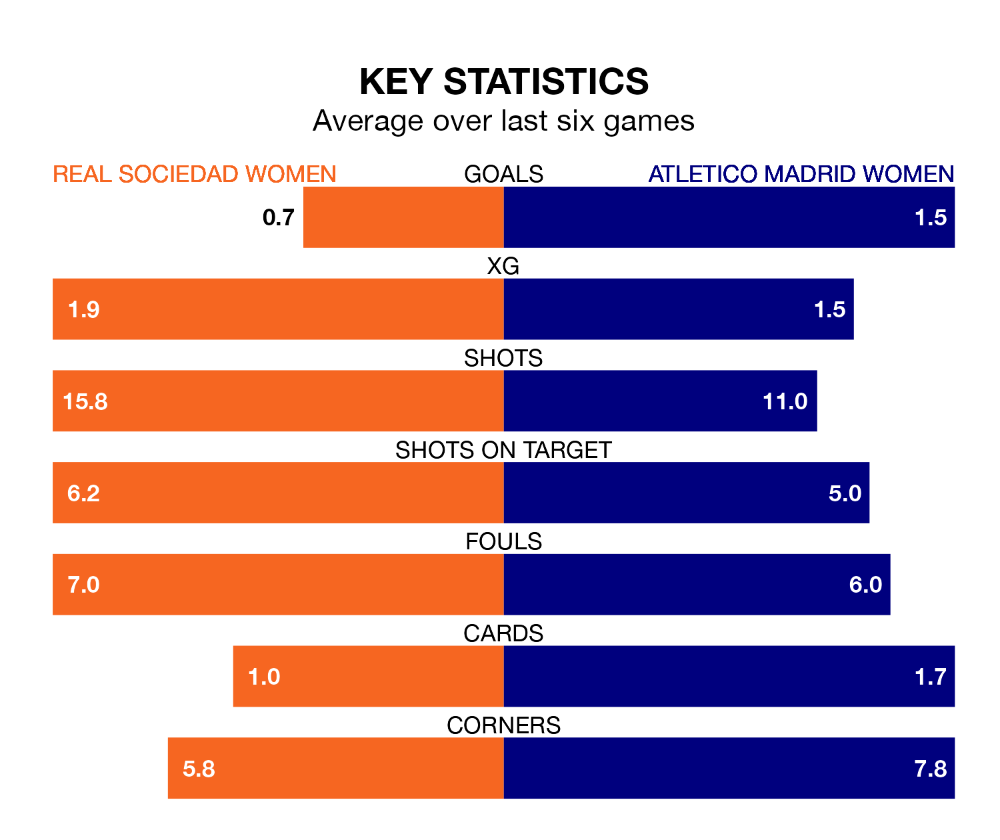

Atletico Madrid Women are strong favourites to take all three points despite Real Sociedad Women's home advantage in Sunday's match at Instalaciones de Zubieta.
*Betting Company* are offering odds of 1.7 on Atletico Madrid sealing the win, with the visitors sitting fourth in Liga F table.
Sociedad Women, who are eighth in the league and 16 points behind Atletico Madrid, are priced at 4.1 to win. A draw is set at 3.5.
Sociedad Women are in terrible form in Liga F, with no wins and two draws from their last six games.
With four wins and a draw over that period, Atletico Madrid's form is much better – they have taken 13 points from 18, compared to the hosts' two.
In the last 10 years, Sociedad Women and Atletico Madrid have played each other on 19 occasions. Sociedad Women won two of them, Atletico Madrid 12, and they drew five times.
On average, Sociedad Women scored 0.8 goals and Atletico Madrid 1.9 in those matches.
Their last meeting was on December 16, when they played out a 1-1 draw.
With 30 goals in 24 games so far this season, Sociedad Women are scoring at below the league average rate with 1.2 goals per game. And they are conceding more than average, letting in 43 goals at a rate of 1.8 per game.
The away side, meanwhile, are above average scorers, with 1.8 goals per game, compared to a league average of 1.6. They have conceded 0.8 goals per game.
In Sheila Guijarro Gómez, Atletico Madrid have one of the league's most on-form strikers so far this season. She has notched 13 goals in 23 appearances, to sit fourth in the scoring charts.
Her goal rate of one every 134 minutes is slightly quicker than that of Synne Jensen, Sociedad Women's top scorer with a goal every 134 minutes, and a total of 11 goals in 22 games.
Sociedad Women's last match was on April 21, a 3-0 loss against Valencia Women.
Atletico Madrid beat Real Betis Women 5-1 last time out, also on April 21, with Estefanía Romina Banini Ruiz, Guijarro Gómez, Lucía Moral Ruiz, Ludmila da Silva and Rasheedat Ajibade on the scoresheet.
Updated: 07:59 (UTC), 26/04/24